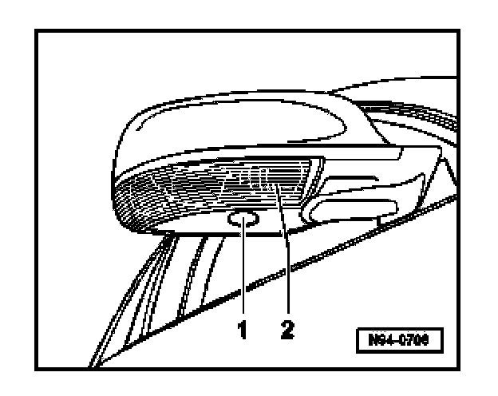

Turn Signals: Description and Operation
Side Mounted Turn Signals And Entry Lights In Exterior Mirrors
General information
Side mounted turn signals and entry/convenience lights are integrated into the exterior mirror housings.

1. Entry light in exterior mirror
2. Turn signal in exterior mirror